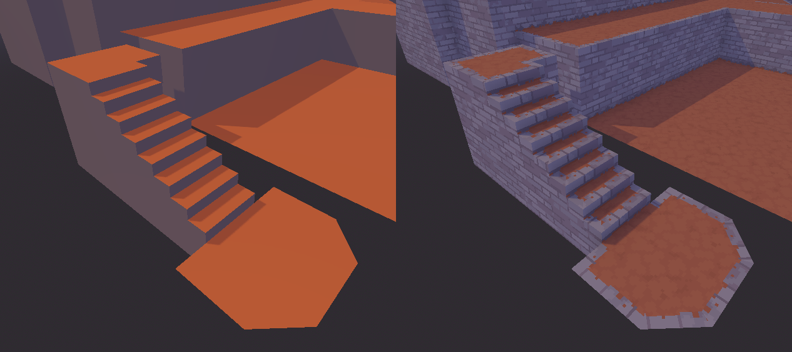
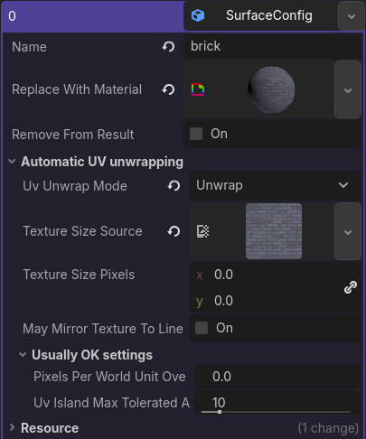
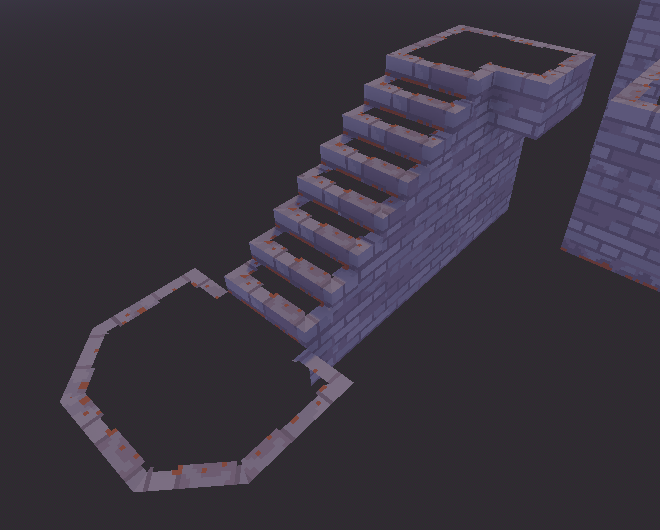

Surface configuration
A mesh is split into multiple surfaces based on its materials. Each surface of the mesh has exactly one material. For example, for a 3D model of a house, one surface would probably be its walls, another its roofs, and yet another the windows.
Below you can see a 3D model with two surfaces: A grey brick surface and a dirt surface.


General settings
Name
The name is used to refer to the surface in the rulebook and must match the name of the material in the 3D model.
The name of a surface is very important. It must match the name of the material in the input 3D model exactly, or else AutoTrimmer won't recognize the surface and things won't work at all.
A surface does not need to appear in the input 3D model. For example, trim surfaces usually do not appear in the input at all and are only added while AutoTrimmer processes the model.
You cannot have two surfaces with the same name.
You also can't
have two surfaces that have the same name in UPPERCASE_SNAKE_CASE.
More details about UPPER_SNAKE_CASE are in the
edge rules documentation.
Surface names are sensitive to capitals and spaces. If the surface name in the configuration is "brick" and your material is called "Brick" in Blender, it won't be matched together because of the capital letter B.
Replace with material (optional)
Which material your surface should use after AutoTrimmer is done with it.
If you leave this option blank, this surface will use whichever material Godot would use by default. I generally recommend filling in this option, because it makes it easy to reuse a rulebook for multiple 3D model files.
Materials explained: In 3D models, a material primarily determines the color of a surface (if we get into fancy technical art, materials can also affect other things, but it's usually mainly about colors). For example, a material might make a surface red, or give it an image texture, or give it an animated image texture (like maybe for water). Materials also determine how a surface is affected by light, but that's actually also a color thing (how dark or bright the color is).
Remove from result
When enabled, this surface won't appear in the processed 3D model.
You probably won't need this option very often, but it's useful for a couple of tricks. (Author's note: I might add some recipes that use this to the recipes book in the future, but right now you're going to have to use your own creativity)
In the image below, the dirt surface has been removed from the end result. Notice how the trims are still there, though!

Automatic UV unwrapping
UV Unwrap Mode
Whether AutoTrimmer should automatically give texture coordinates to this surface, and how it should do it.
AutoTrimmer can automatically unwrap the UVs of a surface for you.
UV unwrapping explained: To draw textures onto your 3D model, the computer needs to know which parts of the texture go where. This is determined by UV coordinates. Each corner of a face is given a coordinate on the texture, and the computer will then fill in the face with the part of the texture that's between those coordinates. UV unwrapping is the process of giving each corner a coordinate on the texture. It's called “unwrapping” because when you're doing it by hand, it's kind of like you're unfolding the 3D model to lay it flat.
These are the possible UV unwrap modes:
- Do not change UVs: Keeps the UVs as they were in your 3D modelling app.
- Unwrap: This is a fairly basic UV unwrap that's good for most tiling textures. This doesn't stretch the texture at all and tries to align the texture so that the texture's Y axis matches Godot's Y axis (so up stays up). You might get ugly texture seams between faces that face different directions.
- Unwrap along length: This unwrap mode is useful for surfaces that are usually thin, and which need to have the texture going along its length. It rotates the texture for each face so that the texture's X axis is aligned with the longest side of the face (at least that's the gist of it). This works quite well for thin surfaces. For other shapes you may get a lot of texture seams, but it can sometimes still give a nice result.
Texture size source (technically optional but highly recommended)
Set the texture size of a surface based on the size of an image.
AutoTrimmer uses the texture size to determine how big the UV coordinates should be in the world. For example, if you have a texture that's 64 by 64 pixels and the setting “pixels per world unit” is 16, the texture will be four world units large.
If your surface's material uses an image, you should put that image in here. The size of that image will be used as the texture size. It's more convenient than filling out “texture size pixels”, and it comes with the advantage that you can overwrite the image later with an image of a different size without needing to adjust the configuration.
I generally recommend that you fill this in whenever the surface's material uses a texture.
Texture size pixels (optional)
Set the texture size of a surface manually, for if you don't have an image.
AutoTrimmer uses the texture size to determine how big the UV coordinates should be in the world. For example, if you have a texture that's 64 by 64 pixels and the setting “pixels per world unit” is 16, the texture will be four world units large.
The setting “texture size pixels” is an alternative to the setting “texture size source”. If you don't have an image that you can use for “texture size source”, you can type the size of the texture into here.
By default, this is 0 by 0 pixels, which is a special value and is treated like leaving it blank.
May mirror texture to line up
When enabled, the texture will be mirrored approximately half the time so that the surface texture is aligned with the same surface going in the opposite direction.
For textures like rooftiles, you generally want the grooves and lines of the texture to line up exactly, even when the surfaces are facing the opposite direction. By enabling this setting, the texture will basically be mirrored when that helps it line up the grooves and lines.
There's no picture here, but the trim option “may mirror texture to line up” does have an image that may help explain the concept more clearly.
Pixels per world unit override (optional)
If you want a separate “pixels per world unit” value for this specific surface, you can fill it in here.
However, I don't recommend using different pixel densities in the same project, because it looks nicer when it's consistent. It can be good for background elements like far-away skyscrapers, though.
By default, this is 0 by 0 pixels, which is a special value and is treated like leaving it blank.
UV island max angle tolerance
Group together faces with similar directions so that they do not have UV seams between them.
AutoTrimmer will group together faces with a very similar orientation into texture islands. This is necessary because the quads that 3D artists make are often not quite flat, and so they would likely get an ugly texture seam in the middle if we didn't group them into one texture island.
This setting configures how much the angles of a texture island are allowed to differ. A higher tolerance leads to more faces getting grouped together.